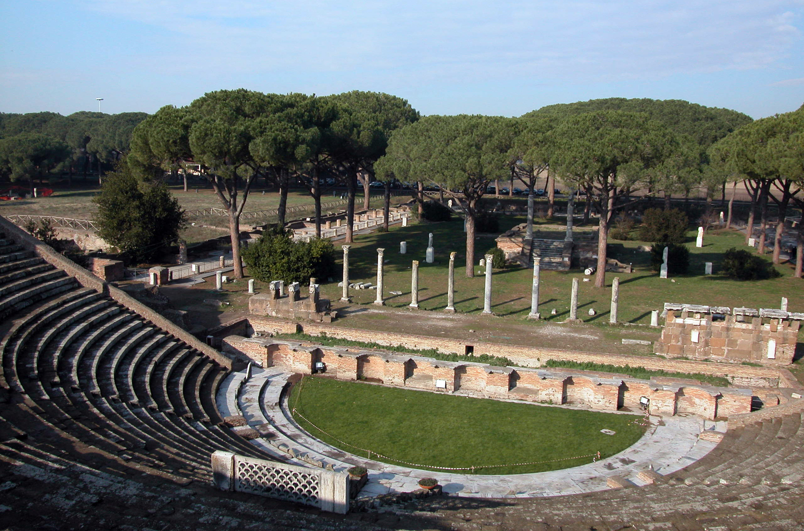
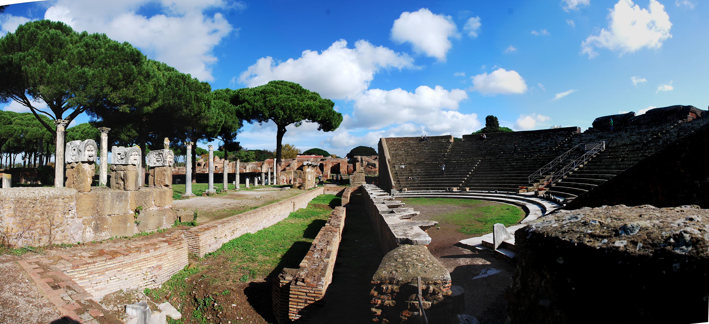
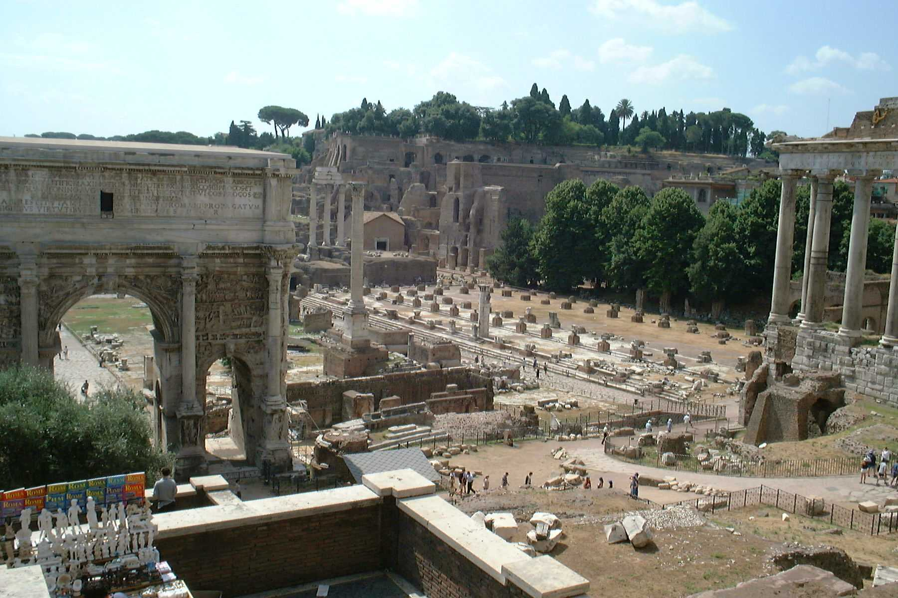

Ostia Antica
Ostia Antica is an extraordinary Roman site that contains the ruins of the ancient port town that served as the gateway to Rome.
Just half an hour from central Rome by train, Ostia Antica has all the inspiration of Pompeii without the throngs of tourists. In fact, if you want to examine well preserved Roman ruins in peace and quiet with time to contemplate the ancient world, you’ll be hard pressed to find better.
Tracing its roots back to at least the 4th century BC, Ostia Antica served as Rome’s principle port for hundreds of years, a witness and monument to the rise of the ancient superpower, its dominance and eventual decline.

Ostia Antica's place in history is most notable for an attack by pirates in 68BC which led to unprecedented powers being handed to Pompey the Great, setting yet another precedent which damaged the foundations of the Republican system.
As the landscape changed over the centuries, Ostia Antica was slowly abandoned, and the site is now a couple of miles from the sea.

Today, visitors can view a great many ruins from the ancient town, including a well preserved Roman theatre, the Baths of Neptune, remains of the military camp, temples to ancient deities, the forum and even Ostia Synagogue, which is the oldest known synagogue site in Europe.
Yet Ostia Antica is so much more than these notable elements, for it contains a huge range of well-preserved more typical Roman dwellings, shops, flats and warehouses and even has a Roman public toilet. This combines to give visitors a great picture of an ancient Roman town and allows you to get a real feel for day-to-day life in ancient Rome.

There is a small museum on site which has a number of artefacts and further information on the history of Ostia Antica. At certain times during the year Ostia Antica is also the venue for concerts and other events.